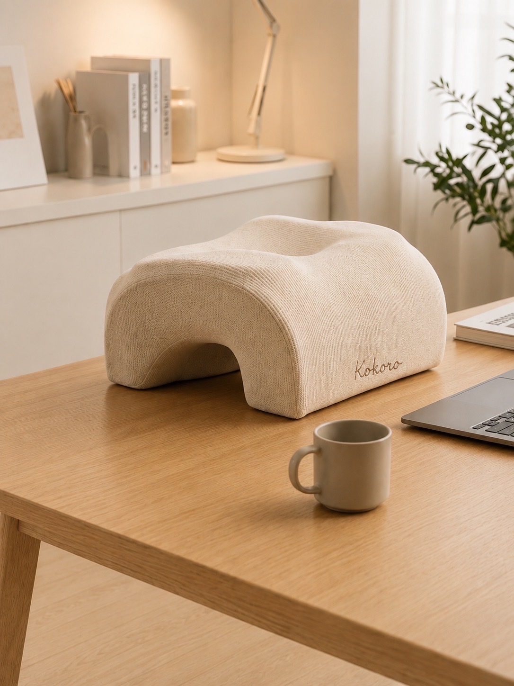
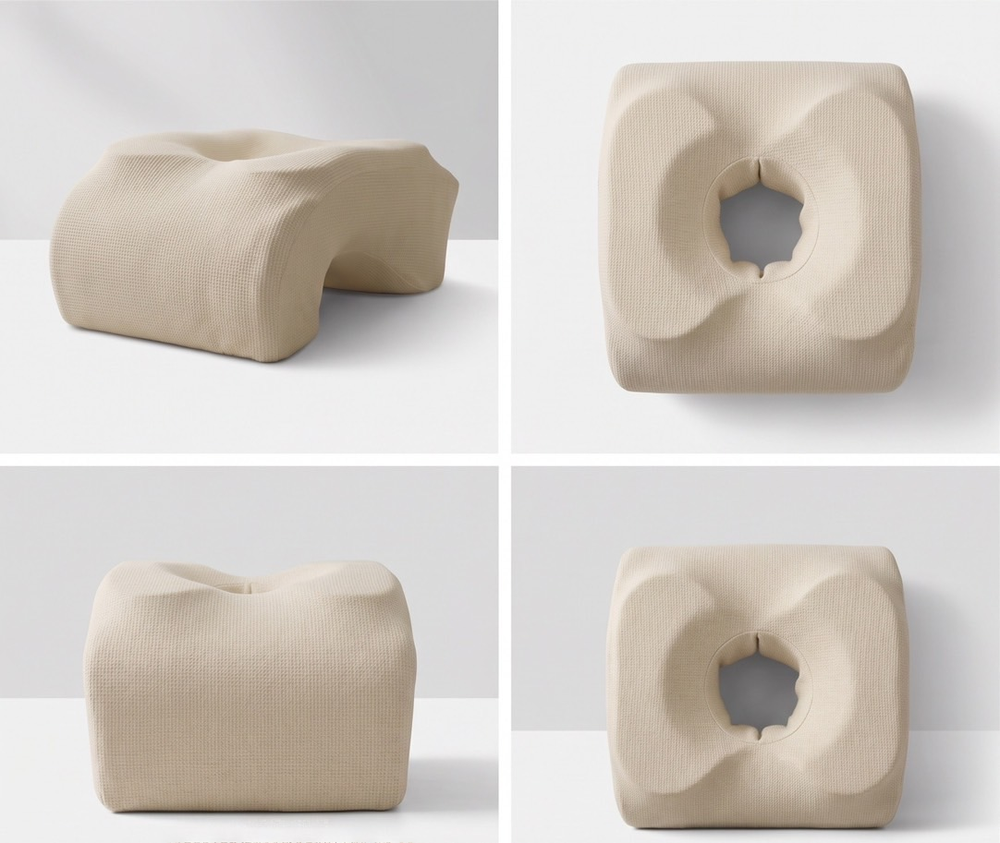
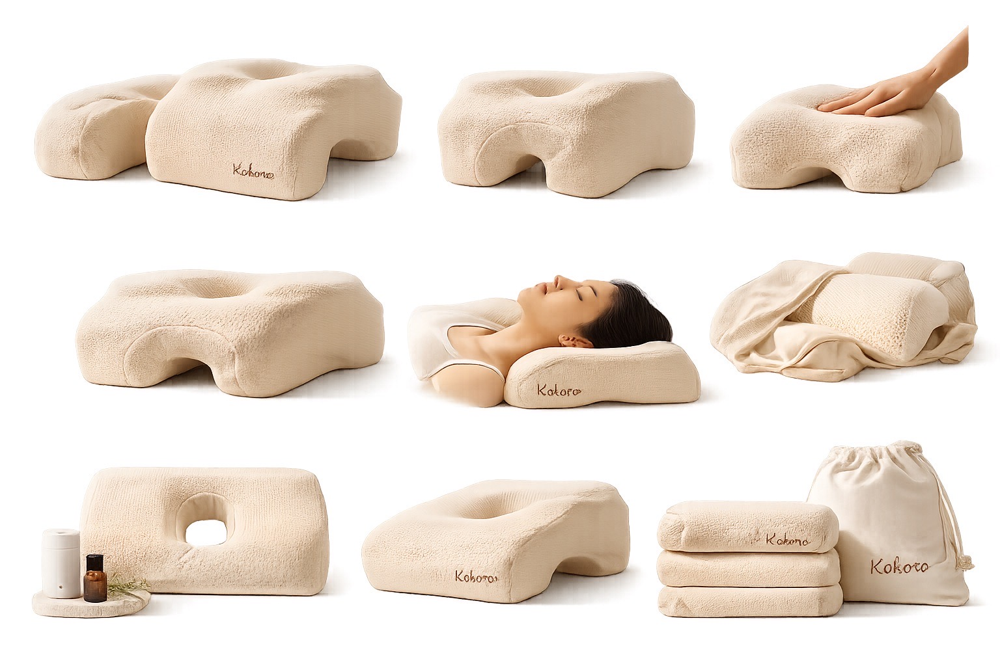

後疫情時代，焦慮與失眠成為 18–35 歲族群的日常。冥想 App 要你「專心」、穿戴裝置只給你「數據」—— 但在焦慮的當下，主動控制呼吸本身就是一種壓力。KOKORO 想做的，是讓你什麼都不用做。
不必躺平、不必戴上任何裝置。趴下、抱著 KOKORO，讓它陪你把呼吸放慢， 在有限的時間裡達到深層放鬆。
單一感測器容易被姿勢與環境雜訊干擾。KOKORO 融合四種生理訊號，在 ESP32-S3 上以「合理性引擎」 與 AI 決策樹判斷你的呼吸相位，誤差控制在 ±5 BPM 內。
先「模仿」你的急促呼吸建立連結（Pacing）， 再以每秒 100ms 的微幅調整，把呼吸從 >20 BPM 溫柔帶到 ~12 BPM 的放鬆區間（Leading）。
抱住枕頭，FSR 偵測壓力喚醒系統，5 秒校正環境噪音與壓力基線。
前 2 分鐘聆聽你的呼吸，氣囊以你當下的節奏微幅起伏，建立連結。
偵測到焦慮急促時，以略慢的節奏運作並延長吐氣，逐步帶你慢下來。
呼吸降至目標並穩定後維持節律，提供持續的「被擁抱」陪伴感。
入睡後自動降低強度進入待機，並保留無呼吸超時的安全警示。
柔軟針織布料、符合人體工學的拱形支撐，中心氣孔讓呼吸順暢、手臂不再發麻。



| 比較項目 | Somnox | Moonbird | Dodow | KOKORO |
|---|---|---|---|---|
| 互動機制 | 氣動擴張＋音頻 | 手持收縮＋App | 光學投影節拍 | 氣動擴張＋AI 感測融合 |
| 感測技術 | 加速度計、部分 CO₂ | 光學心率 PPG | 無（單向引導） | CO₂＋FSR＋聲學＋氣流 |
| 優點 | 擁抱感強、符合人體工學 | 攜帶方便、有 HRV 回饋 | 價格低廉、無接觸 | 多模態精準、被動式 AI 引導 |
| 限制 | 昂貴(~600 USD)、偏重 | 需手持、無法全身放鬆 | 需睜眼、藍光干擾 | 原型階段，尚未量產 |
睡前思緒停不下來，越想睡越焦慮。只想被一股穩定的力量「接住」。
長時間在家缺乏實體接觸，夜裡容易孤寂恐慌，渴望陪伴感。
對聲音與光線敏感，偏好細膩、無聲、自然的互動方式。
只能趴睡補眠，考試焦慮讓大腦關不掉，需要高效率的 Power Nap。
國立臺北商業大學・創意科技與產品設計系・115 級專題成果
不是。KOKORO 定位為「一般健康促進器材（General Wellness Device）」，用於輔助放鬆與呼吸調節， 不診斷或治療失眠、睡眠呼吸中止症等任何疾病。
不用。它是「非穿戴、非視覺」的設計——只要抱著它，裝置會被動偵測你的呼吸並透過氣動起伏溫柔引導， 不需要學習技巧、也不必看任何畫面。
先以你當下的節奏同步起伏建立連結（Pacing），再以每秒約 100ms 的微幅調整， 逐步把呼吸從急促（>20 BPM）帶到放鬆區間（~12 BPM，Leading），讓你在不知不覺中慢下來。
採低噪設計，目標是在辦公室與夜間環境都能舒適使用；隔音與機構噪音仍是我們持續優化的方向之一。
焦慮型入睡者、獨居／遠距工作者、對聲光敏感者，以及只能在桌上趴睡補眠的校園午睡族。